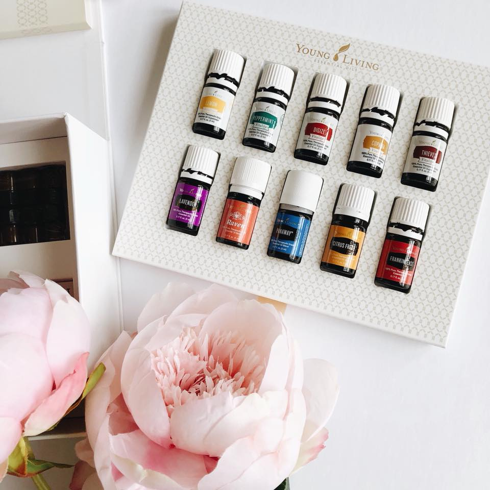

About Essential Oils
Pure essential oils has been used for thousands of years to balance the body and support overall wellness. “Essential” refers to the fluid found in each plant form (seeds, roots, flowers, bark, leaves, peels, rinds) which all pertain to the therapeutic properties. During a low-heat, slow-steam distillation process, the microscopic molecules that make up essential oils become highly concentrated. These tiny molecules have the ability to penetrate every cell in our body, even the blood brain barrier. When we apply a drop of oil to our feet, the oil is absorbed immediately and gets to work : within 22 seconds the molecules have reached our brain, within 2 minutes they can be found in our bloodstream, and within 20 minutes they have affected every cell in our body! Talk about a quick turnaround.
Essential Oils and the Limbic System
The receptors that sense smell are called olfactory receptors. When these receptors are stimulated (smelling something), they transmit impulses to your brain. This pathway is directly connected to your limbic system. The limbic system of the brain is primarily responsible for our emotional life, and also controls functions including adrenaline flow, behavior, motivation, long-term memory, and olfaction. Using essential oils can help process emotions, impact memory, balance hormone levels, and support overall limbic system health. Inhaling essential oils can have a profound impact on releasing emotional patterns, decreasing anxiety, help cope with stress, improve sleep, improve immune system function, decrease anger, help with fatigue, provide a general sense of well being; among other physiological and psychological benefits. Essential oils have the power to change the atmosphere and mood in any room!